Chile y sus Regiones
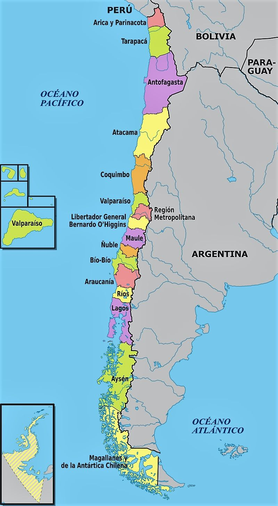
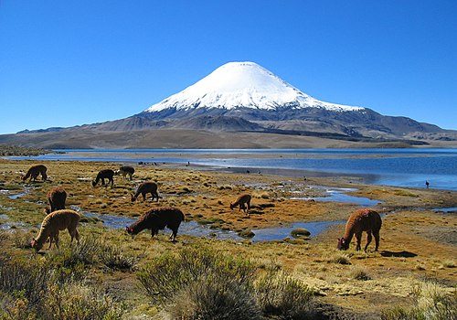
Arica y Parinacota
Atractivos túristicos:
- Humedal del río Lluta.
- Valle de Azapa.
- Picaflor de Arica macho.
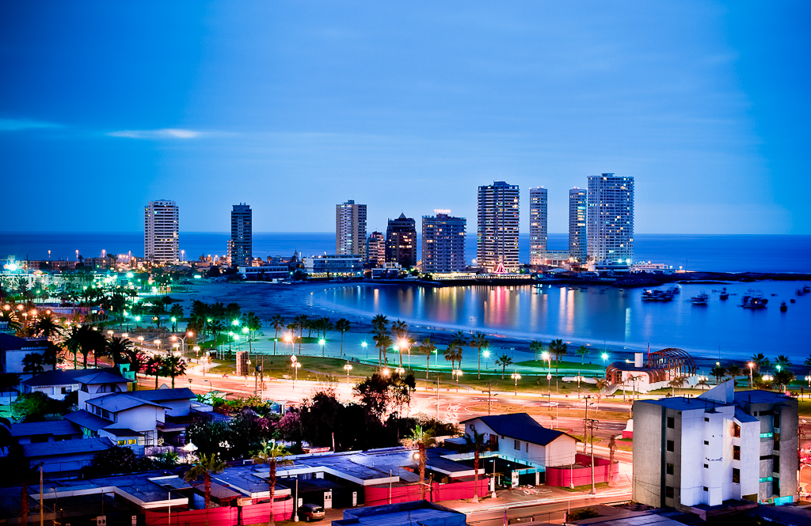
Tarapaca
Atractivos túristicos:
- Museo Naval de Iquique.
- Palacio Astoreca.
- Plaza Arturo Prat.
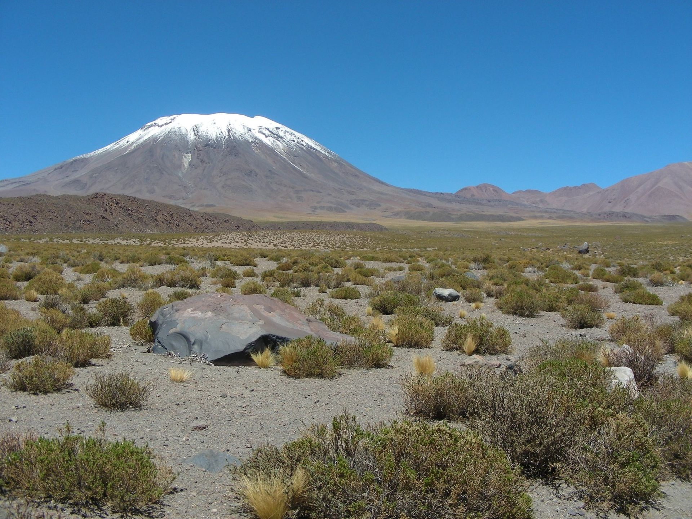
Antofagasta
Atractivos túristicos:
- San Pedro de Atacama.
- Iglesia de San Francisco.
- Géiseres del Tatio.
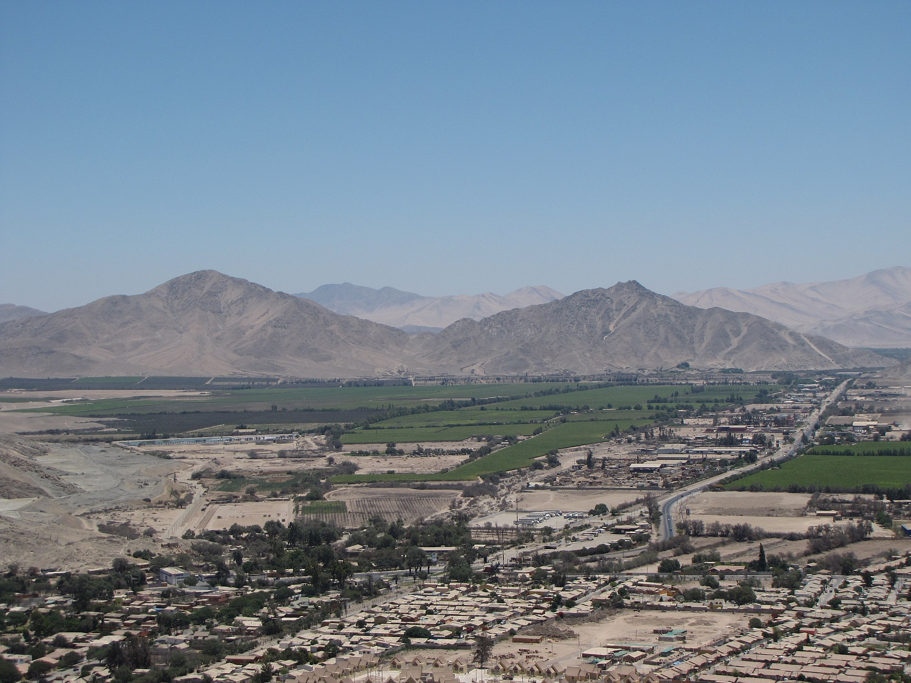
Atacama
Atractivos túristicos:
- Valle del río Copiapó.
- Parque nacional Pan de Azúcar.
- Parque nacional Llanos de Challe.
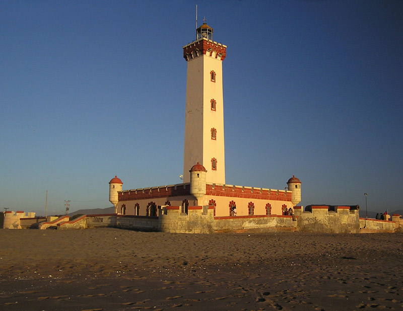
Coquimbo
Atractivos túristicos:
- Valle del Elquí.
- Parque Fray Jorge.
- Observatorio Mamalluca.
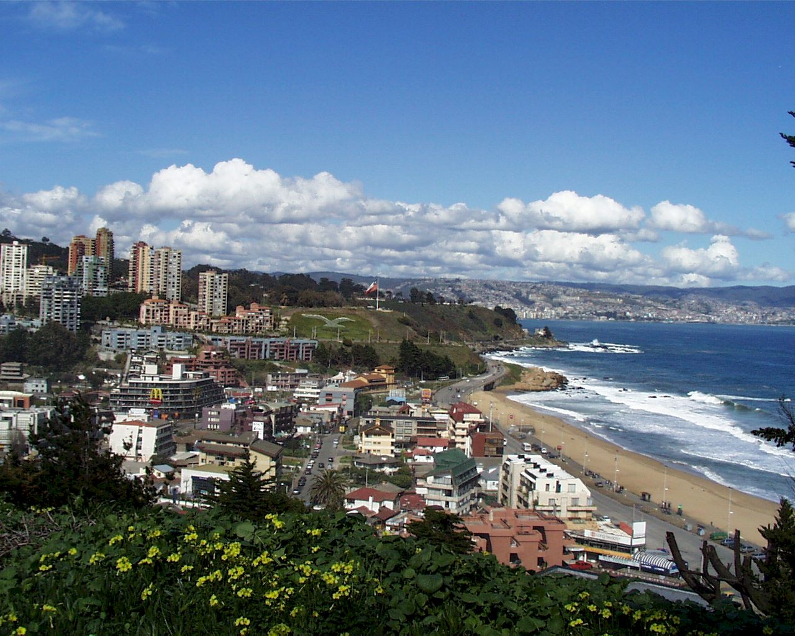
Valparaiso
Atractivos túristicos:
- Portillo.
- Parque nacional Pan de Azúcar.
- Jardín Botánico Nacional.

Metropolitana de Santiago
Atractivos túristicos:
- Palacio de La Moneda.
- Cerro Challay.
- Cajón de Maipo.
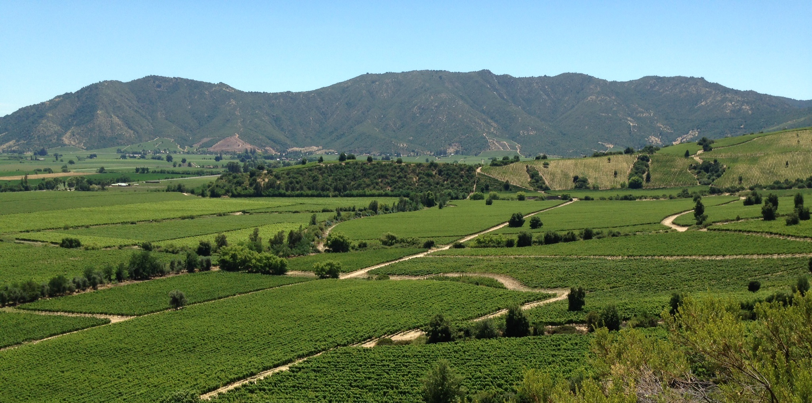
Bernardo O´higgins
Atractivos túristicos:
- Pichilem.
- Santa Cruz.
- San Fernando.
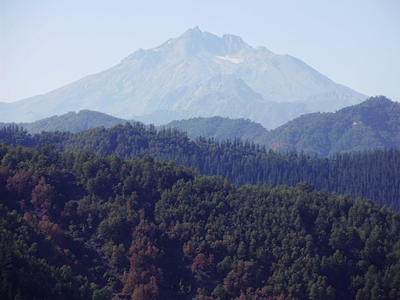
Maule
Atractivos túristicos:
- Volcán San Pedro.
- Radal Siete Tazas.
- Altos de Lircay.

Ñuble
Atractivos túristicos:
- Termas de Chillán.
- Los Huemules del Niblinto.
- Chillán Viejo.
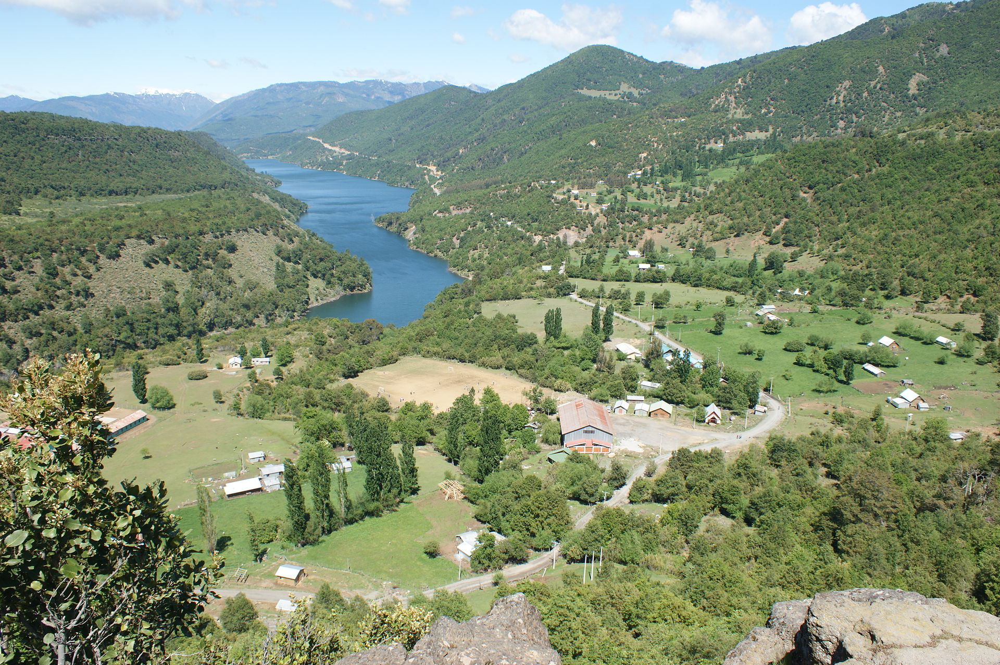
BioBío
Atractivos túristicos:
- Salto del Laja.
- Chiflón del Diablo.
- Gran Concepción.
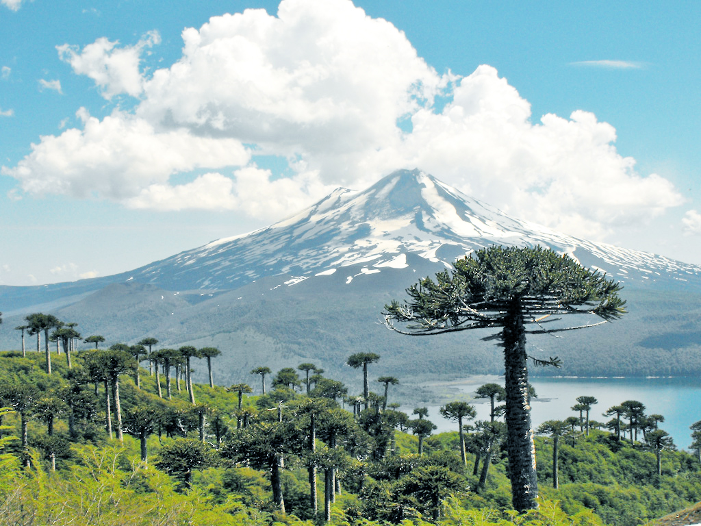
Araucanía
Atractivos túristicos:
- Parque nacional Conguillío.
- Parque nacional Huerquehue.
- Río Blanco.
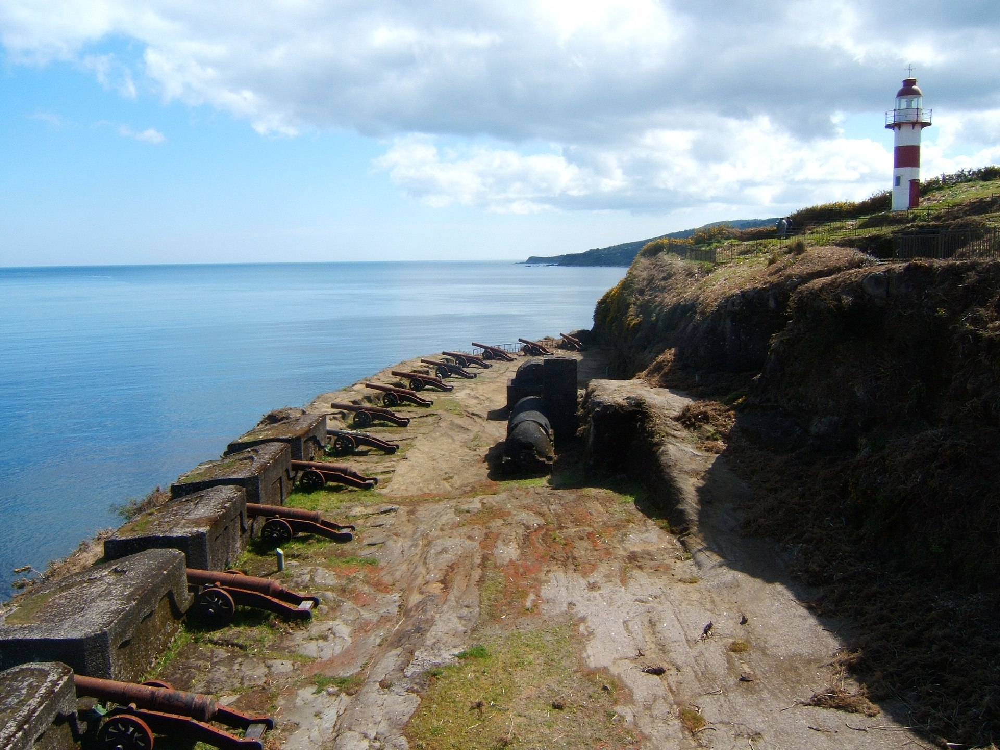
Los Ríos
Atractivos túristicos:
- Castillo de Niebla.
- Corral.
- Bosque Valdiviano.
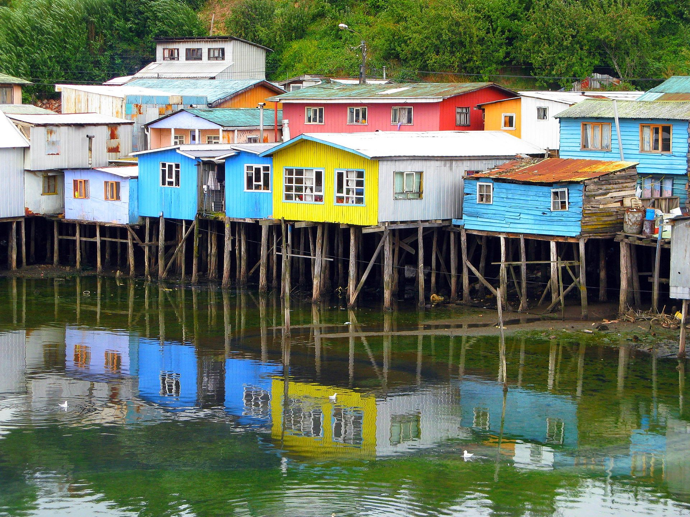
Los Lagos
Atractivos túristicos:
- Lago Llanquihue.
- Lago de todos los santos.
- Archipiélago de Chiloé.
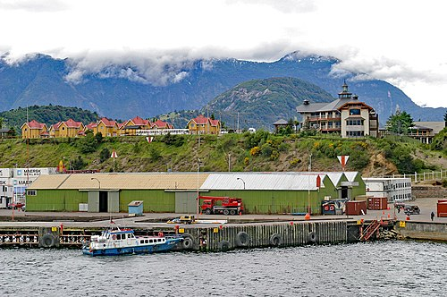
Aysén
Atractivos túristicos:
- Campos de Hielo.
- Carretera Austral.
- Catedrales de Marmol.
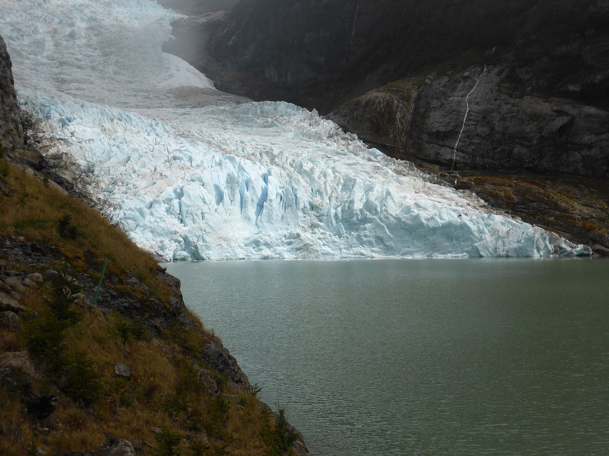
Magallanes
Atractivos túristicos:
- Torres del Paine.
- Fuerte Bulnes.
- Parque Nacional Yendegaia.
Ir arriba